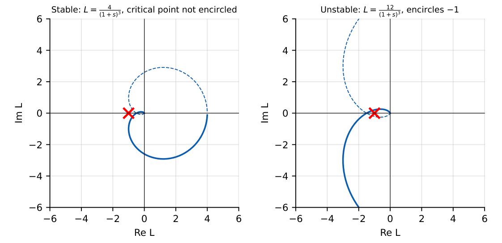
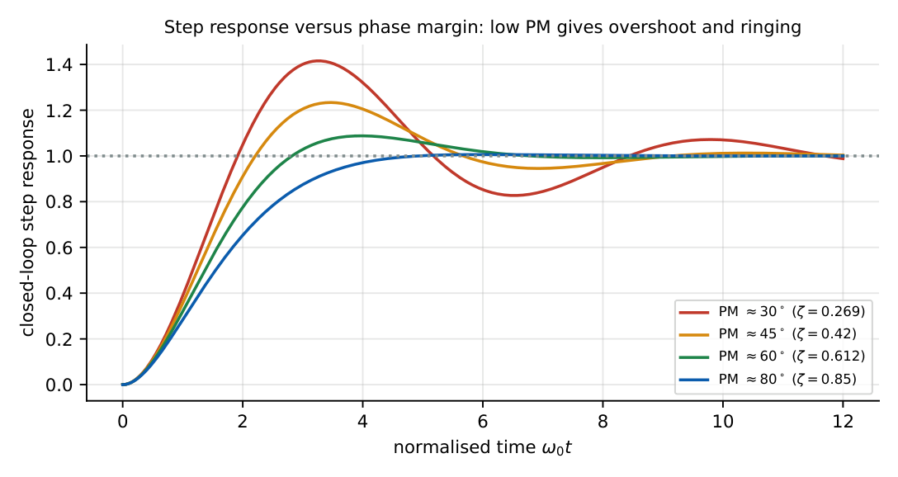
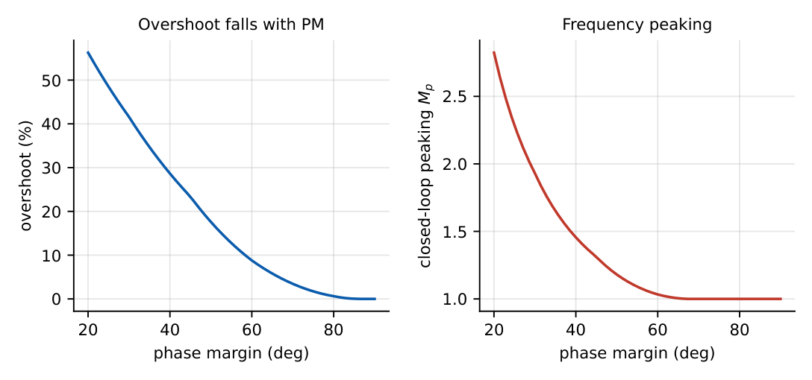
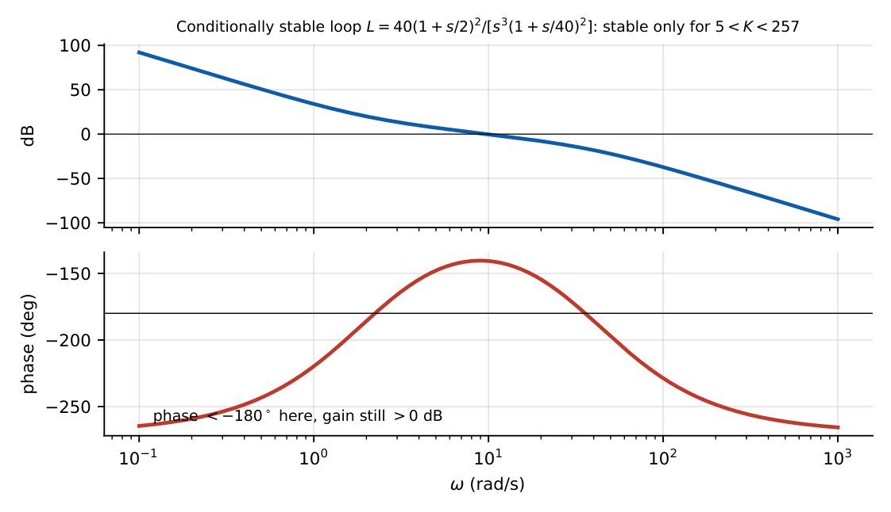
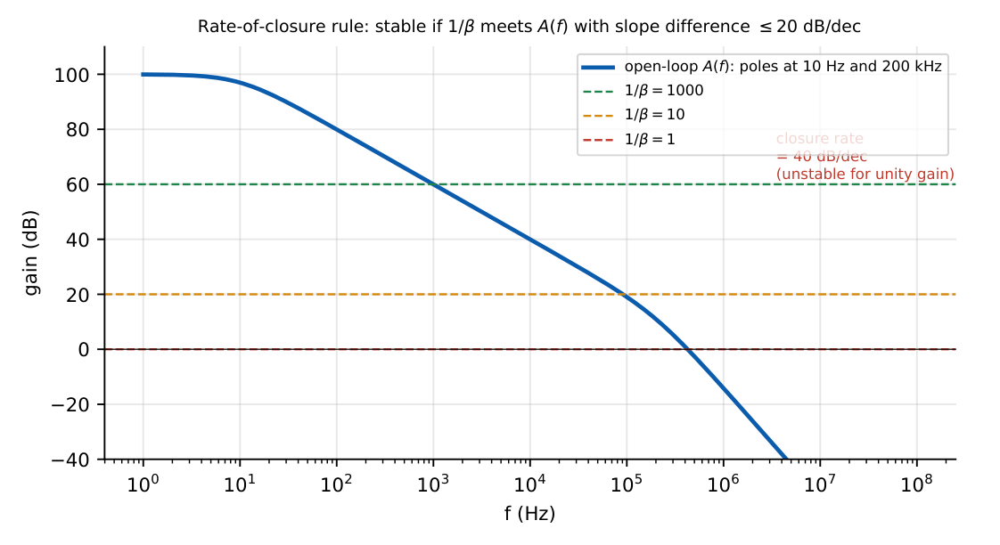

Stability and Phase Margin
In this chapter
28.1 Closed-loop stability
The closed-loop transfer function \(A_f(s)=\dfrac{A(s)}{1+L(s)}\) has poles where \(1+L(s)=0\). The system is stable if all these roots lie in the left half plane. Since \(L(s)=A(s)\beta(s)\), stability depends on the loop gain \(L\) and not on \(A\) alone.
28.2 Loop gain
The loop gain \(L(j\omega)\) is found by breaking the loop, injecting a test signal and measuring the returned signal. Critical point: \(L(j\omega)=-1\) (magnitude 1, phase \(-180^\circ\)): here \(1+L=0\): the closed-loop gain is infinite: sustained oscillation (Barkhausen).

28.3 Nyquist stability concept
Nyquist criterion: the number of clockwise encirclements of \(-1\) by the Nyquist plot of \(L(j\omega)\) (\(-\infty<\omega<\infty\)) equals \(N=Z-P\), where \(Z\) = closed-loop RHP poles, \(P\) = open-loop RHP poles. For a stable open loop (\(P=0\)) the closed loop is stable iff there are no encirclements.

28.4 Bode stability analysis
For minimum-phase loops one need not draw the Nyquist plot. Stability requires:
- at the gain crossover \(\omega_{gc}\) (\(|L|=1\)), \(\angle L>-180^\circ\) (positive PM), or equivalently
- at the phase crossover \(\omega_{pc}\) (\(\angle L=-180^\circ\)), \(|L|<1\) (positive GM).
28.5 Phase margin
\(\mathrm{PM}=180^\circ+\angle L(j\omega_{gc})\)
Rule: \(\zeta\approx\mathrm{PM}/100\) (for \(\mathrm{PM}<60^\circ\)); overshoot \(=100e^{-\pi\zeta/\sqrt{1-\zeta^2}}\%\).
| PM | \(\zeta\) | step overshoot | closed-loop peaking |
|---|---|---|---|
| \(30^\circ\) | 0.27 | 42% | 1.9 |
| \(45^\circ\) | 0.42 | 23% | 1.3 |
| \(60^\circ\) | 0.61 | 8.8% | 1.0 |
| \(90^\circ\) | \(\ge1\) | 0 | none |
Design targets: \(\mathrm{PM}\ge45^\circ\) (acceptable), \(60^\circ\) (good, near-optimal settling).


28.6 Gain margin
\(\mathrm{GM}=-20\log|L(j\omega_{pc})|\); typically \(\ge10\) dB is required for robust designs.
\(L(s)=\dfrac{K}{(s+1)^3}\): \(\angle L=-180^\circ\) at \(\omega=\sqrt3\), where \(|L|=K/8\). Critical \(K=8\); for \(K=4\), \(\mathrm{GM}=20\log(8/4)=6\) dB. (Routh: \(s^3+3s^2+3s+1+K\) stable iff \(9>1+K\).)
28.7 Conditional stability
Some loops are stable only for a range of gain: reducing the gain can cause instability. This occurs when the phase drops below \(-180^\circ\) at a frequency where \(|L|>1\) and later rises again above \(-180^\circ\) before the gain crossover.

Examples: loops with multiple integrators, some voltage regulators, high-order filters with saturating amplifiers. Saturation (gain reduction at large signals) can trigger oscillation.
28.8 Oscillation due to insufficient phase margin
Low PM produces (a) ringing and overshoot in the step response, (b) peaking in the closed-loop gain near \(\omega_{gc}\), and (c) with \(\mathrm{PM}=0\), sustained oscillation at \(\omega_{gc}\). In an op-amp circuit this appears as ringing at the output edge, or oscillation with capacitive loads and stray capacitance at the inverting input.
A follower (\(\beta=1\)) with GBW \(=1\) MHz and a second pole at \(2\) MHz: \(\mathrm{PM}=90^\circ-\tan^{-1}(1/2)=63.4^\circ\) (good). If the second pole is at \(500\) kHz: \(\mathrm{PM}=90^\circ-\tan^{-1}(2)=26.6^\circ\) (poor: \(\sim45\%\) overshoot).
28.9 Stability of op-amp feedback systems
Draw the open-loop gain \(A(f)\) and \(1/\beta\) on the same Bode plot. The loop gain is \(|L|=|A|\beta\); the gain crossover is where the curves meet.
Stable (PM \(\ge45^\circ\)) if the two curves intersect with a difference of slopes \(\le20\) dB/dec; unstable (or nearly) if the difference is \(40\) dB/dec.

Fixes: increase the closed-loop gain (higher \(1/\beta\)), reduce the compensation cutoff, add a lead capacitor across \(R_f\) (\(C_f\approx\sqrt{C_{in}/2\pi R_f\,GBW}\)), isolate capacitive loads with a series resistor, or use an internally compensated (unity-gain-stable) op-amp.
28.10 GATE numerical problems
Q1. At the gain crossover frequency \(\angle L=-135^\circ\). The phase margin is \({}^\circ\).
Q2. At the phase crossover frequency \(|L|=0.1\). The gain margin is dB.
Q3. A unity-gain follower has GBW \(=1\) MHz and a second pole at \(2\) MHz. The approximate phase margin is \({}^\circ\).
Q4. \(L(s)=K/(s+1)^3\). The largest \(K\) for stability is .
Q5. A system with \(\mathrm{PM}=60^\circ\) has approximately (A) 9% (B) 25% (C) 42% (D) 0% overshoot.
Q6. The critical point of the Nyquist plot is (A) \(0+j0\) (B) \(-1+j0\) (C) \(+1+j0\) (D) \(-j1\).
Q7. A conditionally stable system (A) is stable for all \(K>0\) (B) can become unstable if the loop gain is reduced (C) has no phase crossover (D) is always unstable.
Answers: Q1: \(180-135=45^\circ\). Q2: \(20\) dB. Q3: \(63.4^\circ\). Q4: \(8\). Q5: (A). Q6: (B). Q7: (B).
- \(L(s)=100/[(1+s/10^3)(1+s/10^5)(1+s/10^6)]\): PM and GM. [\(48.1^\circ\); \(20.9\) dB]
- An op-amp with GBW \(=10\) MHz, second pole at \(10\) MHz, used as a follower. PM? [\(45^\circ\)]
- Describe the effect of an output capacitive load on stability. [Adds a pole with \(R_o\): reduces phase margin]
- For \(\zeta=0.5\) estimate the PM and overshoot. [\(\approx50^\circ\); \(16\%\)]